Your apps, your order
Arrange the dock with your remote. Open the all-apps grid with Down, ranked by what you use, with 5, 6 or 7 apps per row. Hold OK to add, move or remove an app.
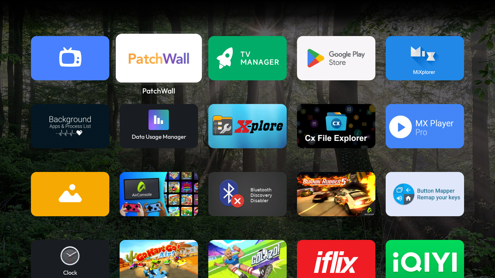
Your apps, your day, and the things you actually care about. A fast, personal launcher for Android TV and Google TV—without a wall of recommendations.
About 550 KB. That’s the launcher APK, not a stripped-down feature list. Optional live data downloads separately.
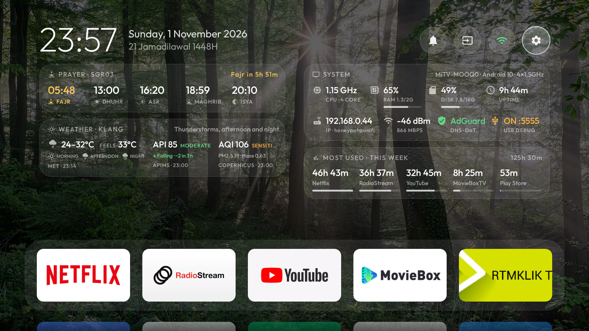
Made for a TV, not a phone stretched across one. The important things are one remote press away, and every card can make room for what matters to you.
Arrange the dock with your remote. Open the all-apps grid with Down, ranked by what you use, with 5, 6 or 7 apps per row. Hold OK to add, move or remove an app.

A clear clock, Hijri date, five daily prayer times and a next-prayer countdown. Choose from 60 JAKIM zones; optional azan and early reminders appear over other apps.
Malaysia forecasts and warnings, temperature and feels-like, measured air pollution and a second air-quality view. Rain, mist, lightning and haze briefly play on the home screen, then settle.
See title, artist, art and playback controls when audio is playing. Your most-used apps card takes its place when the music stops.
CPU clock, RAM, storage, uptime, Wi-Fi and debugging at a glance. The running-apps view shows what’s active and lets you close or hide apps.
Bing’s daily photo, seven built-in wallpapers or your own. Choose which cards show, dim the wallpaper, set your clock and tune notifications—all in the TV’s Settings.
Hold OK on the Settings gear to start the screen saver, set a sleep timer, sleep, restart or shut down (restart and shut down ask first). An Inputs menu for HDMI, AV and Live TV; a bell for launcher and Play Store updates, devices and low memory; connection alerts; and an optional info bar over apps.

Watch Earth in its real orientation and sunlight. Follow the Maghrib and Fajr lines, Makkah and your qibla, city lights, sun glint, aurora, earthquakes, live map edits and the actual orbits of the ISS, Tiangong and Hubble.
Choose a 2-minute camera orbit or real-time Earth rotation; turn the view with your remote. Sky catalogues and some other layers download when first used, then stay available offline. Dim moving visuals help protect against burn-in.
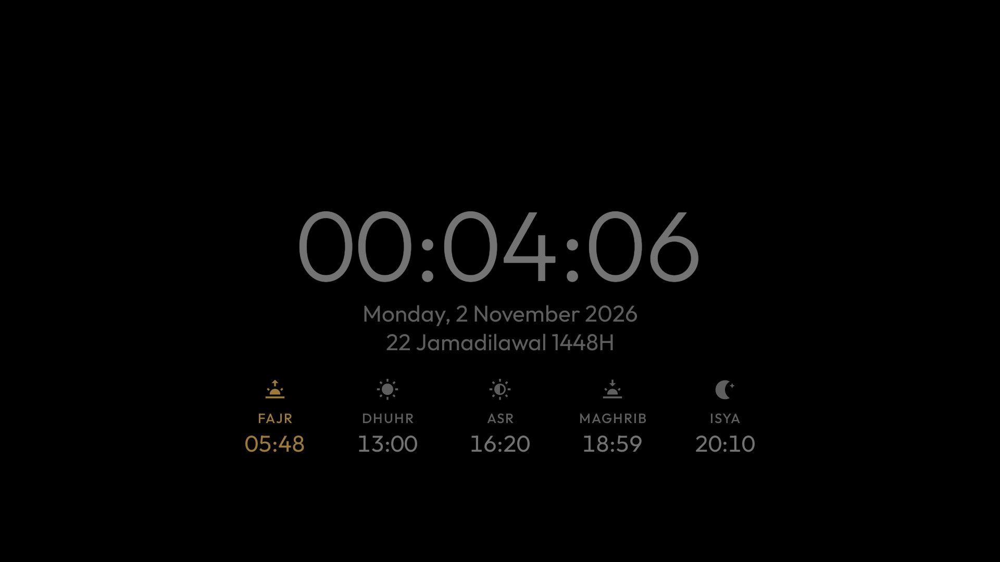
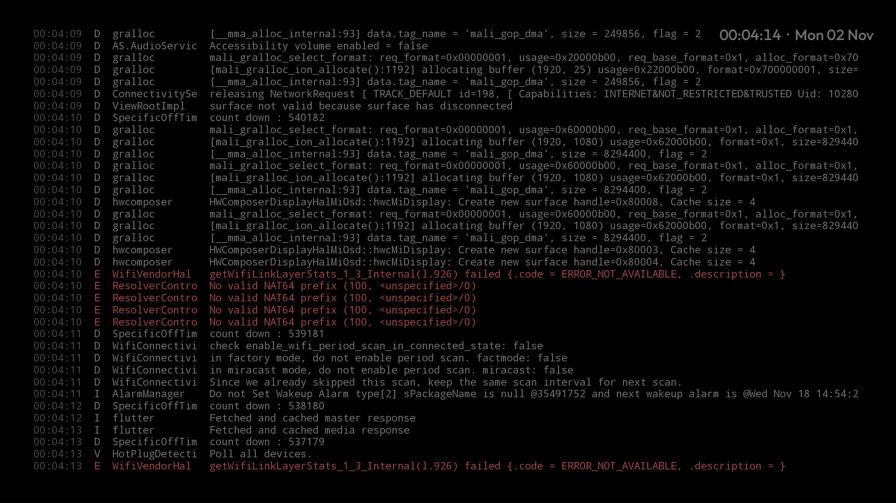
Open RFHN TV Launcher’s local address in your phone’s browser and pair with a PIN on the TV. Swipe to navigate, type, control media and volume, manage apps and the dock, change settings, send a message or link, and move files to and from the TV.
On the same Wi-Fi, open http://<TV IP>:8486. Some controls need USB debugging; the basic remote and other features keep working when it’s off. Keep this local service on a trusted network.
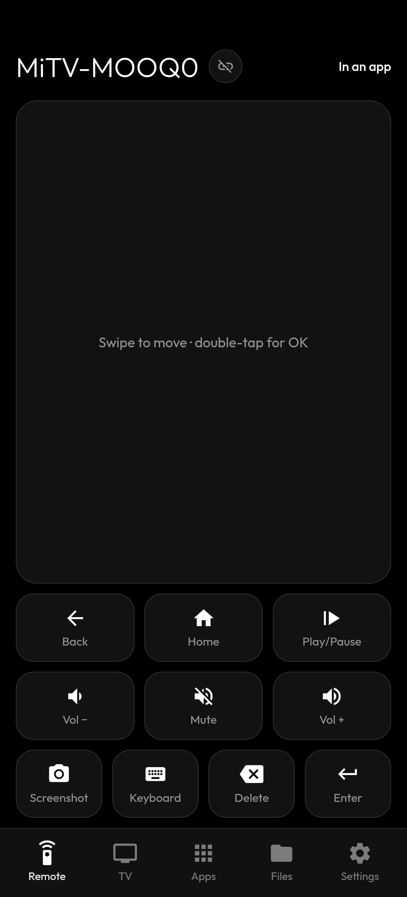
Select a screenshot to see the complete phone view.
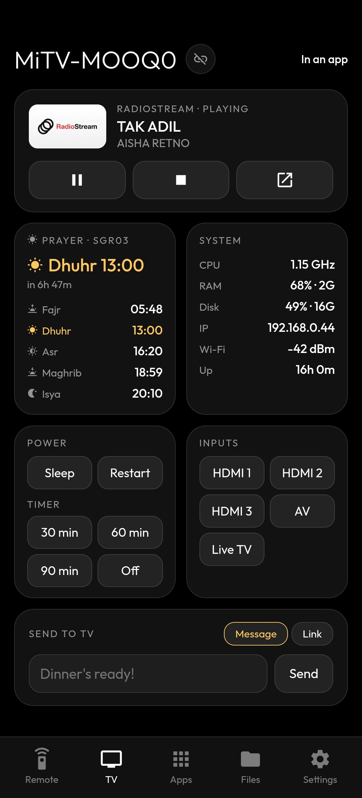

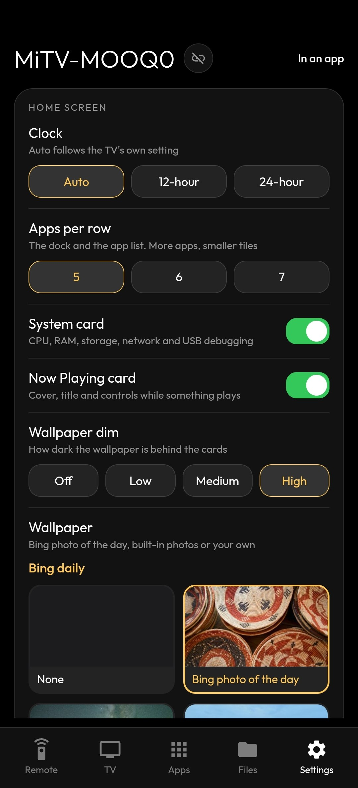

Real, complete 1920 × 1080 captures from the TV. Open any image to see every pixel—nothing is cropped.
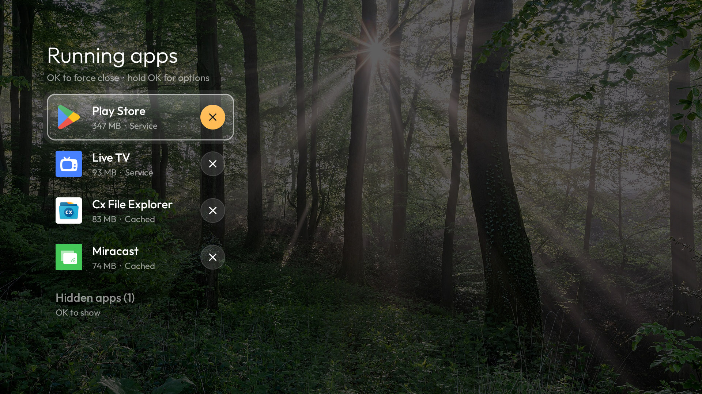

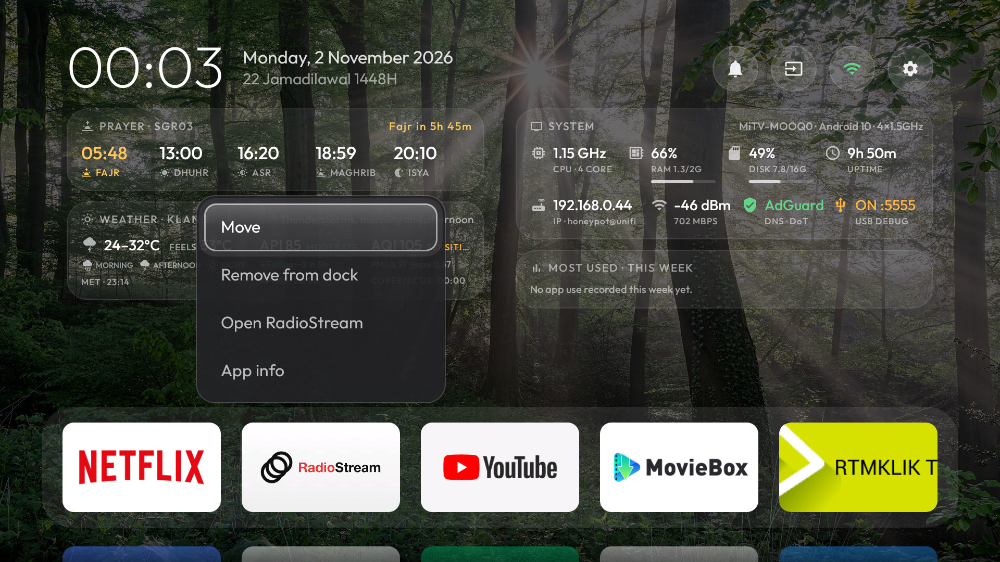
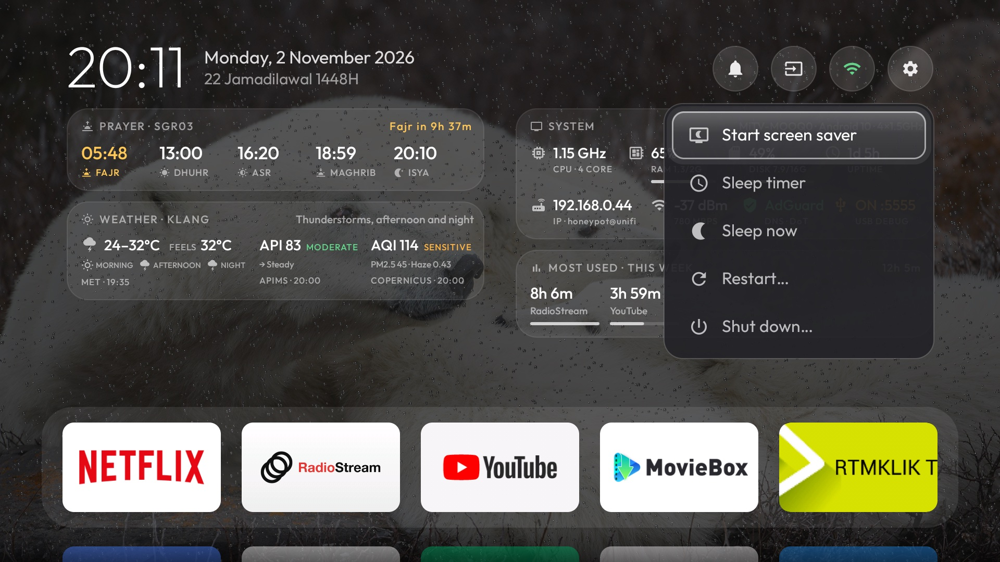
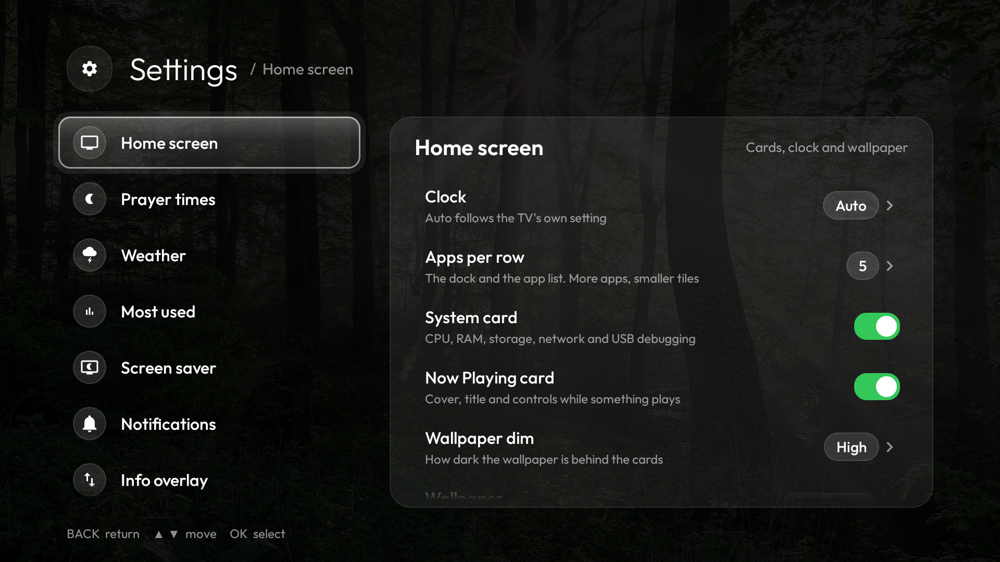

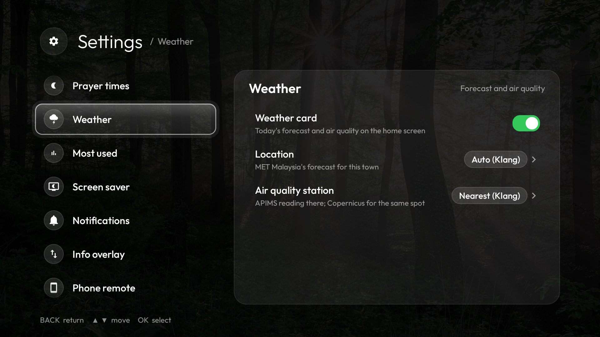

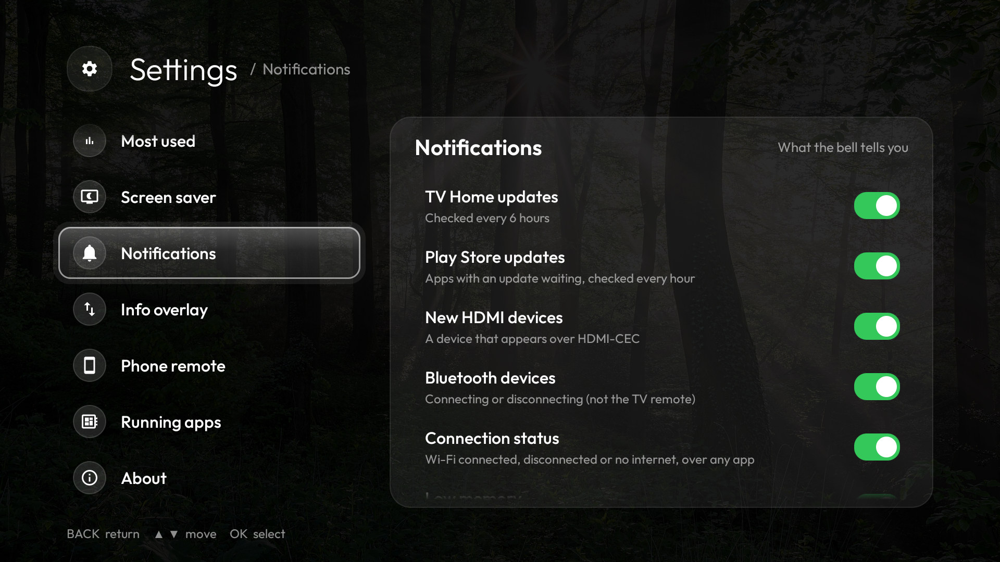
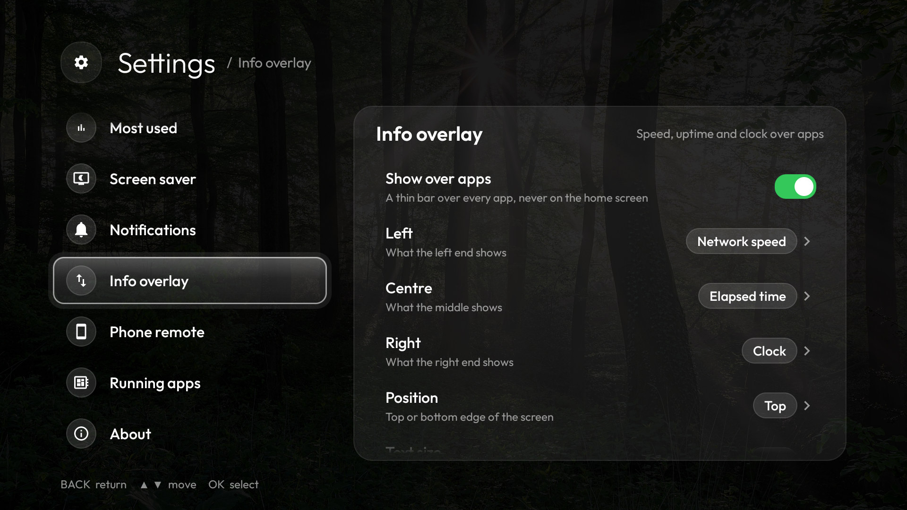


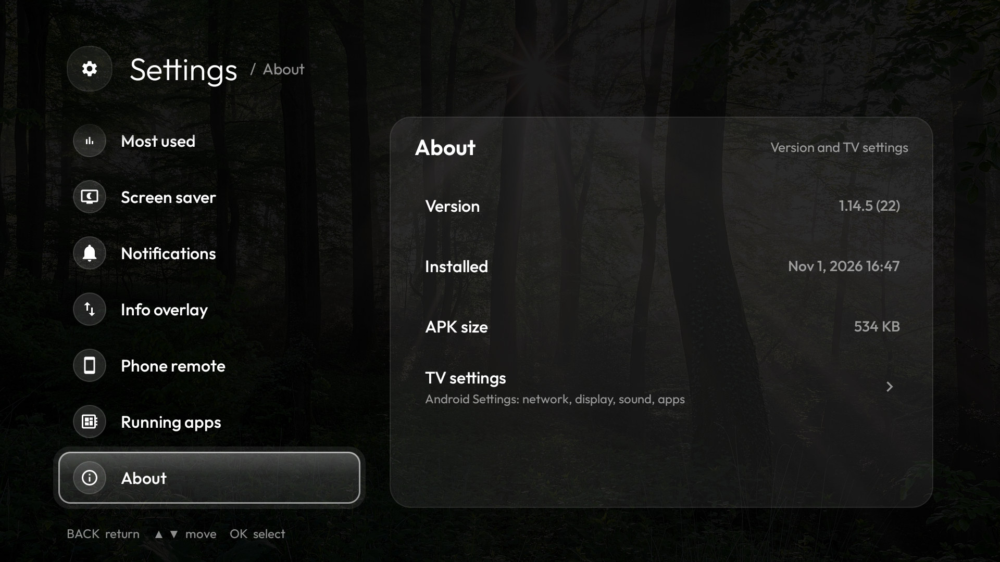
The cross-platform terminal setup app finds your TV, explains every change before making it and checks that Home still works afterward.
Pick the build for your computer—or run it in Termux on an Android phone. Unpack and open tvhome-tui. On desktop it can offer to download Android Platform Tools for you.
Use the same local network. Enable USB or Wireless debugging on the TV, then let the app find it or enter its address. Accept the TV’s pairing/authorization prompt.
Install / Update changes the launcher only. Set up my TV also offers cleanup and privacy options. Review the exact plan, confirm, and press Home. Undo is built in.
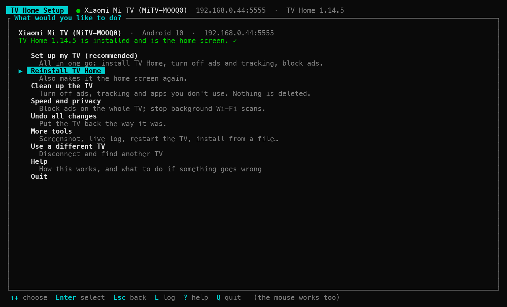
On the latest release, expand Assets and match the filename below. When the release information loads, these become direct download links; otherwise they open the release page. The version changes with each release; the files still use their original tvhome-tui name.
tvhome-tui-<version>-aarch64-apple-darwin.tar.gzFind Apple silicon build ↗tvhome-tui-<version>-aarch64-linux-android.tar.gzFind Android ARM64 build ↗tvhome-tui-<version>-armv7-linux-androideabi.tar.gzFind Android ARM32 build ↗After unpacking a build you trust, open Terminal in the folder containing tvhome-tui. Remove quarantine from that executable only, then run it:
xattr -d com.apple.quarantine ./tvhome-tui
./tvhome-tuiOn a phone, install Termux from F-Droid or GitHub first, then run pkg install android-tools. Windows may show an unsigned-app warning. The step-by-step setup guide covers each platform.
Want only the ready-made APK? It’s on the same release page. The setup app is recommended because it also handles permissions and the Home button.
After setup: choose “Turn off USB debugging and quit” in the TUI when offered. Leaving network debugging on lets other people on your Wi-Fi control the TV. The launcher and basic phone remote continue to work with debugging off, though some advanced controls need it.